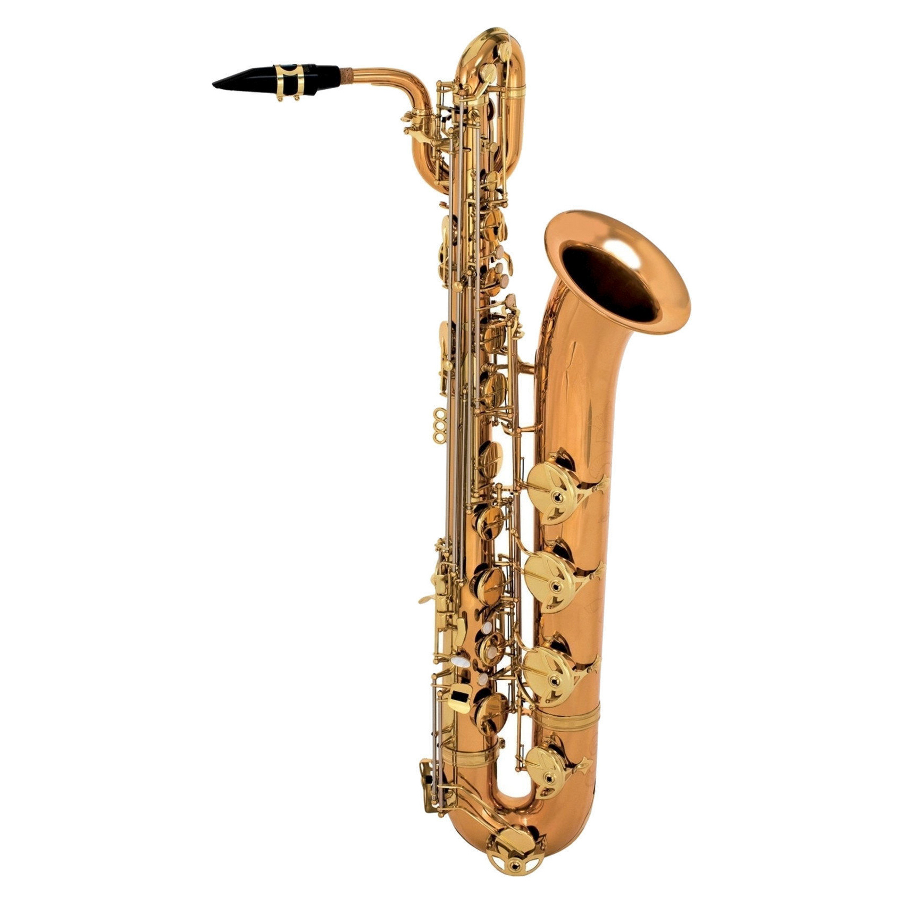

Саксофон ( фр. saxophone ) - духовий музичний інструмент з одинарною тростиною . Сконструйований бельгійським майстром Адольф Сакс в першій половині 1840-х років. Має своєрідне виразне звучання і велику технічну рухливість [ 2 ] . З середини XIX століття використовується в духовому оркестрі , рідше - у симфонічному . Один з основних інструментів у джазі [ 2 ] та споріднених йому жанрах, а також в естрадній музиці.
